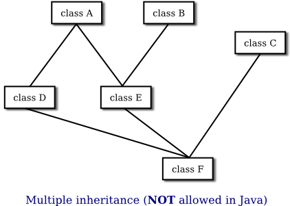

Interfaces
Some object-oriented programming languages, such as C++, allow a class to extend two or more superclasses. This is called multiple inheritance. In the illustration below, for example, class E is shown as having both class A and class B as direct superclasses, while class F has three direct superclasses.

Such multiple inheritance is not allowed in Java. The designers of Java wanted to keep the language reasonably simple, and felt that the benefits of multiple inheritance were not worth the cost in increased complexity. However, Java does have a feature that can be used to accomplish many of the same goals as multiple inheritance: interfaces. We have already encountered "functional interfaces" in Section 4.5 in connection with lambda expressions. A functional interface specifies a single method. However, interfaces can be much more complicated than that, and they have many other uses.
You are not likely to need to write your own interfaces until you get to the point of writing fairly complex programs. However, there are several interfaces that are used in important ways in Java's standard packages, and you will need to learn how to use them.
Defining and Implementing Interfaces
We encountered the term "interface" in other contexts, in connection with black boxes in general and subroutines in particular. The interface of a subroutine consists of the name of the subroutine, its return type, and the number and types of its parameters. This is the information you need to know if you want to call the subroutine. A subroutine also has an implementation: the block of code which defines it and which is executed when the subroutine is called.
In Java, interface is a reserved word with an additional, technical meaning. An "interface" in this sense consists of a set of instance method interfaces, without any associated implementations. (Actually, a Java interface can contain other things as well, as we'll see later.) A class can implement an interface by providing an implementation for each of the methods specified by the interface. Here is an example of a very simple Java interface:
public interface Strokeable {
public void stroke(GraphicsContext g);
}This looks much like a class definition, except that the implementation of the stroke() method is omitted. A class that implements the interface Strokeable must provide an implementation for stroke(). Of course, the class can also include other methods and variables. For example,
public class Line implements Strokeable {
public void stroke(GraphicsContext g) {
. . . // do something—presumably, draw a line
}
. . . // other methods, variables, and constructors
}Note that to implement an interface, a class must do more than simply provide an implementation for each method in the interface; it must also state that it implements the interface, using the reserved word implements as in this example: "public class Line implements Strokeable". Any concrete class that implements the Strokeable interface must define a stroke() instance method. Any object created from such a class includes a stroke() method. We say that an object implements an interface if it belongs to a class that implements the interface. For example, any object of type Line implements the Strokeable interface.
While a class can extend only one other class, it can implement any number of interfaces. In fact, a class can both extend one other class and implement one or more interfaces. So, we can have things like
class FilledCircle extends Circle
implements Strokeable, Fillable {
. . .
}The point of all this is that, although interfaces are not classes, they are something very similar. An interface is very much like an abstract class, that is, a class that can never be used for constructing objects, but can be used as a basis for making subclasses. The subroutines in an interface are abstract methods, which must be implemented in any concrete class that implements the interface. You can compare the Strokeable interface with the abstract class
public abstract class AbstractStrokeable {
public abstract void stroke(GraphicsContext g);
}The main difference is that a class that extends AbstractStrokeable cannot extend any other class, while a class that implements Strokeable can also extend some class, as well as implement other interfaces. Of course, an abstract class can contain non-abstract methods as well as abstract methods. An interface is like a "pure" abstract class, which contains only abstract methods.
Note that the methods declared in an interface must be public and abstract. In fact, since that is the only option, it is not necessary to specify either of these modifiers in the declaration.
In addition to method declarations, an interface can also include variable declarations. The variables must be "public static final" and effectively become public static final variables in every class that implements the interface. In fact, since the variables can only be public and static and final, specifying the modifiers is optional. For example,
public interface ConversionFactors {
int INCHES_PER_FOOT = 12;
int FEET_PER_YARD = 3;
int YARDS_PER_MILE = 1760;
}This is a convenient way to define named constants that can be used in several classes. A class that implements ConversionFactors can use the constants defined in the interface as if they were defined in the class.
Note in particular that any variable that is defined in an interface is a constant. It's not really a variable at all. An interface cannot add instance variables to the classes that implement it.
An interface can extend one or more other interfaces. For example, if Strokeable is the interface given above and Fillable is an interface that defines a method fill(g), then we could define
public interface Drawable extends Strokeable, Fillable {
// (more methods/constants could be defined here)
}A concrete class that implements Drawable must then provide implementations for the stroke() method from Strokeable and the fill() method from Fillable, as well as for any abstract methods specified directly in the Drawable interface.
An interface is usually defined in its own .java file, whose name must match the name of the interface. For example, Strokeable would be defined in a file named Strokeable.java. Just like a class, an interface can be in a package and can import things from other packages.
This discussion has been about the syntax rules for interfaces. But of course, an interface also has a semantic component. That is, the person who creates the interface intends for the methods that it defines to have some specific meaning. The interface definition should include comments to express that meaning, and classes that implement the interface should take that meaning into account. The Java compiler, however, can only check the syntax; it can't enforce the meaning. For example, the stroke() method in an object that implements Strokeable is presumably meant to draw a graphical representation of the object by stroking it, but the compiler can only check that the stroke() method exists in the object.
Default Methods
Starting in Java 8, interfaces can contain default methods. Unlike the usual abstract methods in interfaces, a default method has an implementation. When a class implements the interface, it does not have to provide an implementation for the default method—although it can do so if it wants to provide a different implementation. Essentially, default methods are inherited from interfaces in much the same way that ordinary methods are inherited from classes. This moves Java partway towards supporting multiple inheritance. It's not true multiple inheritance, however, since interfaces still cannot define instance variables. Default methods can call abstract methods that are defined in the same interface, but they cannot refer to any instance variables.
Note that a functional interface can include default methods in addition to the single abstract method that it specifies.
A default method in an interface must be marked with the modifier default. It can optionally be marked public but, as for everything else in interfaces, default methods are automatically public and the public modifier can be omitted. Here is an example:
public interface Readable { // represents a source of input
public char readChar(); // read the next character from the input
default public String readLine() { // read up to the next line feed
StringBuilder line = new StringBuilder();
char ch = readChar();
while (ch != '\n') {
line.append(ch);
ch = readChar();
}
return line.toString();
}
}A concrete class that implements this interface must provide an implementation for readChar(). It will inherit a definition for readLine() from the interface, but can provide a new definition if necessary. When a class includes an implementation for a default method, the implementation given in the class overrides the default method from the interface.
Note that the default readLine() calls the abstract method readChar(), whose definition will only be provided in an implementing class. The reference to readChar() in the definition is polymorphic. The default implementation of readLine() is one that would make sense in almost any class that implements Readable. Here's a rather silly example of a class that implements Readable, including a main() routine that tests the class. Can you figure out what it does?
public class Stars implements Readable {
public char readChar() {
if (Math.random() > 0.02)
return '*';
else
return '\n';
}
public static void main(String[] args) {
Stars stars = new Stars();
for (int i = 0 ; i < 10; i++ ) {
String line = stars.readLine(); // Calls the default method!
System.out.println( line );
}
}
}Default methods provide Java with a capability similar to something called a "mixin" in other programming languages, namely the ability to mix functionality from another source into a class. Since a class can implement several interfaces, it is possible to mix in functionality from several different sources.
Interfaces as Types
As with abstract classes, even though you can't construct an object from an interface, you can declare a variable whose type is given by the interface. For example, if Strokeable is the interface given above, and if Line and Circle are classes that implement Strokeable, as above, then you could say:
Strokeable figure; // Declare a variable of type Strokeable. It
// can refer to any object that implements the
// Strokeable interface.
figure = new Line(); // figure now refers to an object of class Line
figure.stroke(g); // calls stroke() method from class Line
figure = new Circle(); // Now, figure refers to an object
// of class Circle.
figure.stroke(g); // calls stroke() method from class CircleA variable of type Strokeable can refer to any object of any class that implements the Strokeable interface. A statement like figure.stroke(g), above, is legal because figure is of type Strokeable, and any Strokeable object has a stroke() method. So, whatever object figure refers to, that object must have a stroke() method.
Note that a type is something that can be used to declare variables. A type can also be used to specify the type of a parameter in a subroutine, or the return type of a function. In Java, a type can be either a class, an interface, or one of the eight built-in primitive types. These are the only possibilities (given a few special cases, such as an enum, which is considered to be a special kind of class). Of these, however, only classes can be used to construct new objects.
An interface can also be the base type of an array. For example, we can use an array type Strokeable[] to declare variables and create arrays. The elements of the array can refer to any objects that implement the Strokeable interface:
Strokeable[] listOfFigures;
listOfFigures = new Strokeable[10];
listOfFigures[0] = new Line();
listOfFigures[1] = new Circle();
listOfFigures[2] = new Line();
.
.
.Every element of the array will then have a stroke() method, so that we can say things like listOfFigures[i].stroke(g).